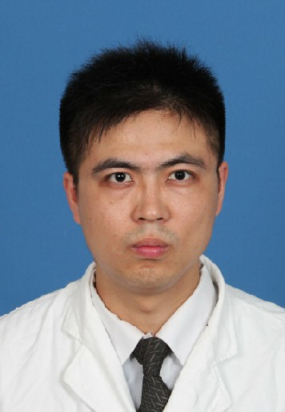

-
陈良
足踝外科副主任，主任医师，硕士，研究生导师
熟练掌握了骨科基础及临床理论，尤其在创伤骨科、关节周围复杂骨折，骨科创 伤后遗症治疗方面有独到之处。目前专攻足踝外科，年开展足踝部手术200 余例，治疗足踝 部的非外伤性疾病：踇外翻（大脚骨），平足，糖尿病足，退行性骨关节病，足踝部肿瘤， 足踝部慢性疼痛，踝关节不稳定等积累了相当的经验。
陈巧杰
足踝外科，主治医师，硕士研究生
长期从事骨科临床工作，对骨科常见疾病的诊治有着丰富的临床经验，对创伤骨 科包括四肢骨折、骨盆骨折、脊柱骨折等严重复合性创伤的处理积累一定经验。曾在上海华 山医院进修运动医学，在踝关节、膝关节、肩关节方面疾病诊治有独到的体会与认识，并多 次参加国家级教育培训班，并取得相应资格证书。在核心期刊发表论文数篇，参加省市级课 题研究2 项。
邬耀军
足踝外科，主治医师，硕士研究生
2013 年毕业于西安交通大学医学院，熟悉常规骨科疾病的诊疗，目前在核心期 刊发表论文1 篇。
武少坤
足踝外科，主治医师，硕士研究生
温州医学院毕业 专业方向 足踝、创伤。
顾志谦
足踝外科，主治医师，医学硕士
宁波大学外科学硕士研究生毕业，专业方向为骨关节及脊柱退行性疾病。